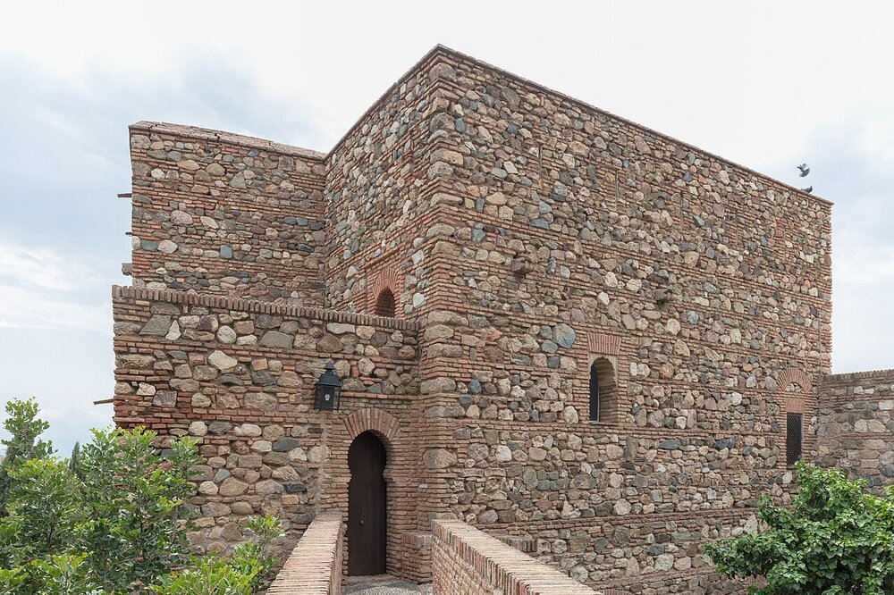
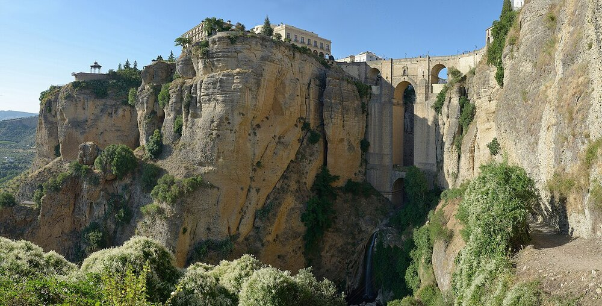
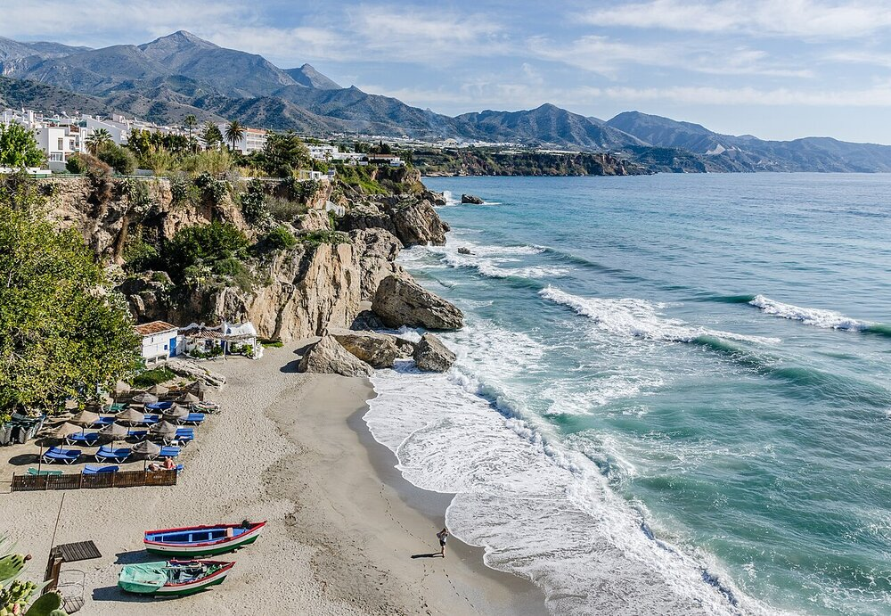
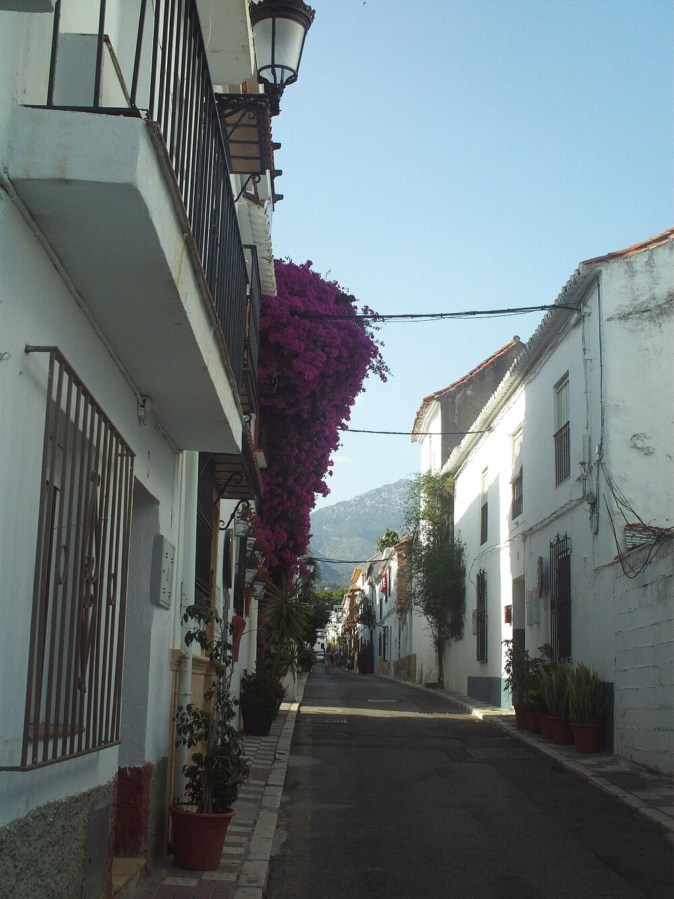
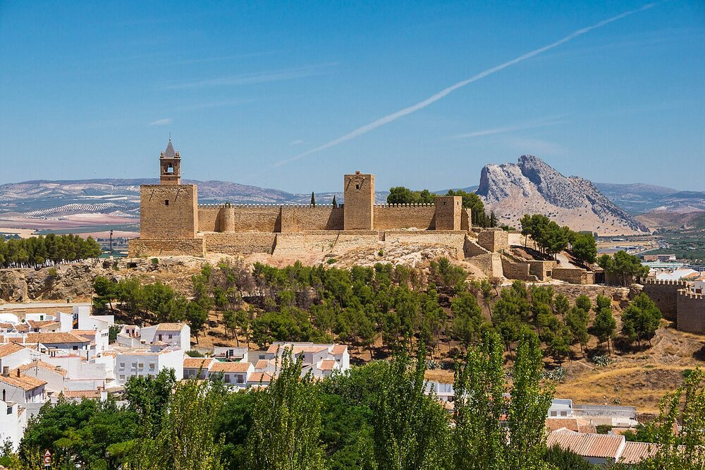
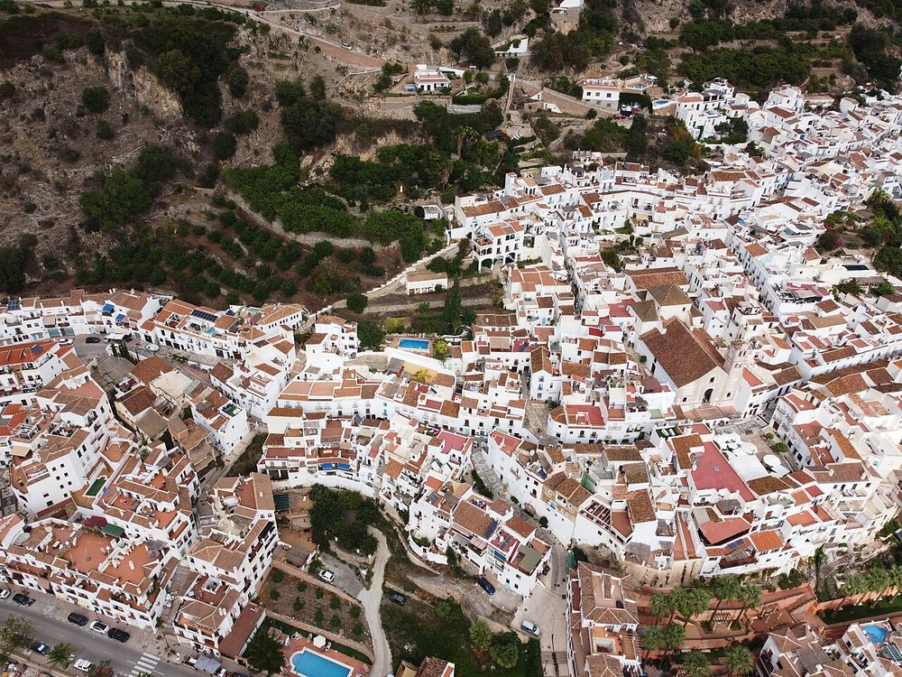
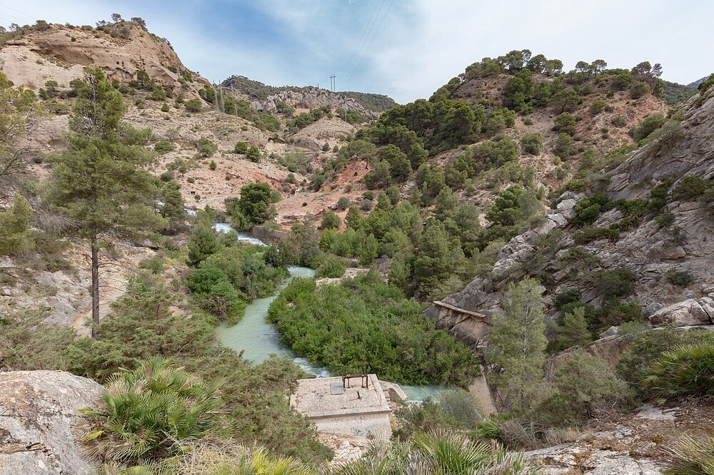
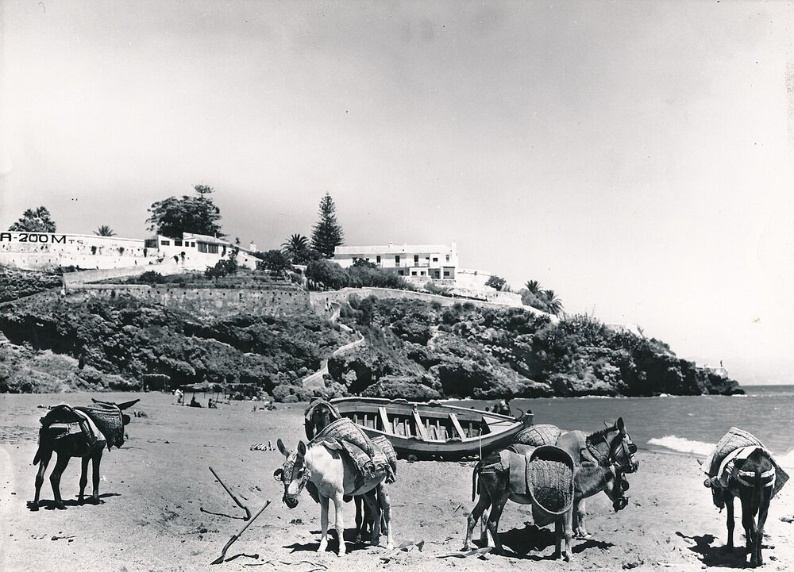

La Alcazaba vigila la ciudad desde el centro. Debajo están el teatro romano y las calles del casco antiguo.
Málaga capital
Comarca metropolitana · Alcazaba, Picasso y pescaíto
La provincia de Málaga, de un vistazo
Ocho paradas por la provincia: historia, costa, naturaleza y buena comida. Pasa el ratón por cada foto o usa el teclado para descubrir el lugar.

La Alcazaba vigila la ciudad desde el centro. Debajo están el teatro romano y las calles del casco antiguo.
Comarca metropolitana · Alcazaba, Picasso y pescaíto

El Puente Nuevo cruza el tajo y separa la Ronda antigua de la nueva. Una de las estampas más conocidas de Andalucía.
Serranía de Ronda · Puente Nuevo y plaza de toros

Desde el Balcón de Europa se ven las cuevas y la costa. Nerja es el punto perfecto para combinar playa y naturaleza.
Costa del Sol oriental · Balcón de Europa y cuevas

En el casco antiguo de Marbella quedan azulejos, patios y tiendas pequeñas. Muy lejos del ruido de la costa.
Costa del Sol · Casco antiguo y paseo marítimo

Antequera guarda la alcazaba, los dólmenes y la Peña de los Enamorados.
Valle de Guadalhorce · Dólmenes y vino de Málaga

Calles blancas, balcones con flores y vistas a la sierra. Frigiliana es uno de los pueblos más bonitos de la provincia.
Axarquía · Pueblo blanco y miel

El Caminito del Rey recorre la garganta del Guadalhorce entre paredes de piedra. Reserva entrada antes de ir.
Ardales · Pasarela y garganta del Guadalhorce

La Carihuela conserva el sabor de los pescadores de Torremolinos. Aquí nacen los espetos de sardinas.
Costa del Sol · La Carihuela y espetos